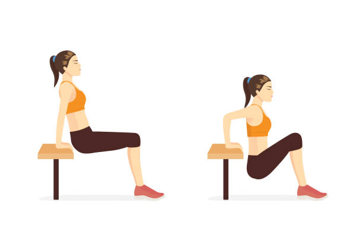

tips for Pull-ups
- Reach and grip the bar with both hands, keeping them apart at shoulder-width. Your palms need to stay facing away from you.
- Fully extend your arms and let your bodyweight hang. If the bar is set too low, no problem. Just bend your knees.
- Keeping your back, shoulders, and core engaged—pull up.
tips for Push-ups
- Have a strong grip on the floor. Make sure your neck and spine are aligned.
- Don't shrug your shoulders. Bring your hands towards your toes. Clench your backside. 6) Remember to breathe.
- don’t let gravity do the work for you

tips for Squats
- Assume the squat stance. Screw your feet into the floor. Keep your chest up
- start squat , finish when you’re parallel
- when you stand , drive through your heels
tips for Crunches
- Lie down on your back. Plant your feet on the floor, hip-width apart. Bend your knees and place your arms across your chest. Contract your abs and inhale
- Exhale and lift your upper body, keeping your head and neck relaxed.
- Inhale and return to the starting position.

tips for Lunges
- keep your body upright and core engaged through the movement
- Don't overextend your leg when you lunge forward, which can cause your back to arch.
- Try to step out enough so your body is comfortable vertically, and your torso and hips are straight down.
tips for Planks
- Engage your core during the entire movement to prevent your back from getting strained or injured.
- Keep your body in a straight line, from your head to your heels. Your back should be flat, and your butt should be down, not piking upward.
- focus on quality over quantity
tips for Wall sits
- engage ab muscles and slowly slide your back down the wall your thighs are parallel to the ground
- adjust your feet so your knees are lined up with your ankles
- keep back flat on wall

tips for Tricep dips
- contract your core and take your body weight onto your arms
- bend your knees so your feet(toes) are off the ground
- bend your Elbows and lower your body slowly
tips for High knees
- stand with your feet hip-width apart
- lift one knee to your chest
- alternate legs to chest at your own pace